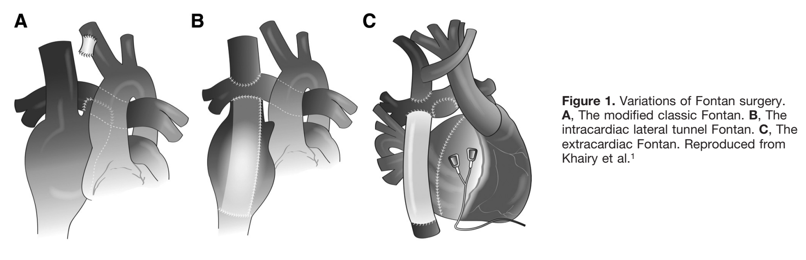

Extracardiac Fontan conversion has been shown to significantly improve hemodynamics
and decrease atrial arrhythmias in patients with a single ventricle.
However, since the procedure bypasses the right atrium, it makes transvenous atrial access
extremely difficult in the future. As a result, transvenous ablation and
implantation of an antitachycardia pacemaker are typically not feasible in such patients.
Since atrial arrhythmias in this patient population are known to increase mortality risk,
rhythm control is a better treatment option than rate control.
The best way to achieve rhythm control in these patients is by the use of antiarrhythmic drugs.
Ref:
Circulation. 2012;126(21):2516-2525.

RELATED:
Epicardial vs Transvenouse Route in Congenital Heart Disease
Consider Epicardial pacing in a small kid (<10kg) or in the presence of intracardiac shunt.
Transvenous route is safe in a bigger kid or adult who had "complete" repair w/o residual shunt.
Congenital Heart Block
Mostly found without other structural heart diseases.
In a well-grown, non-cyanotic adult with almost normal physical exam (except loud S2),
who presents with complete heart block, think of corrected TGA.
Indication for PPM:
Symptomatic or Asymptomatic with high risk features (I)
High risk features: ventricular dysfunction, prolonged QTc, complex ventricular
ectopy, wide QRS escape rhythm, ventricular rate <50 b.p.m.,
ventricular pauses >three-fold the cycle length of the underlying rhythm.
PPM in Asymptomatic w/o high risk features = IIb
2013 ESC guidelines